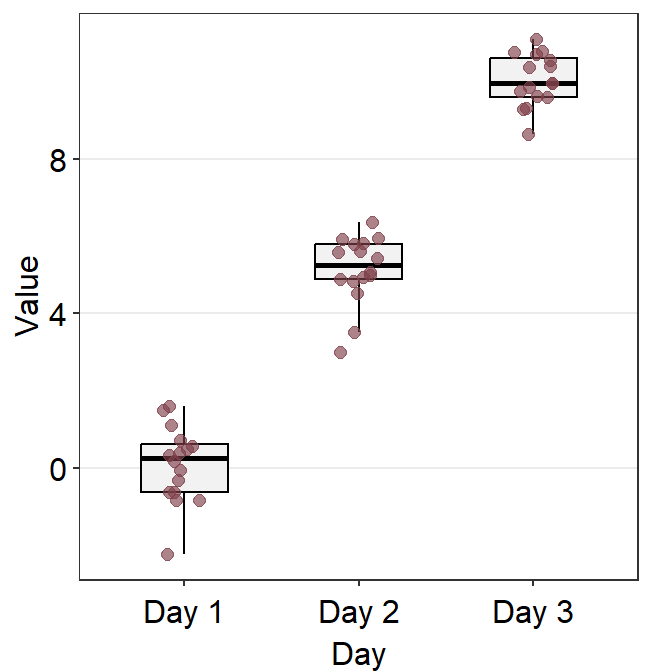
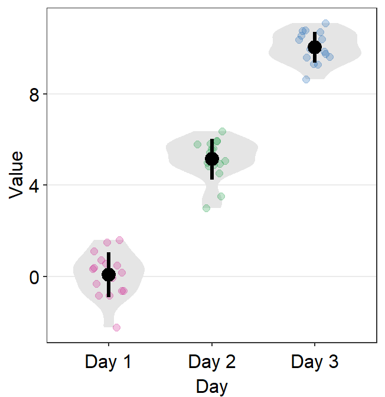
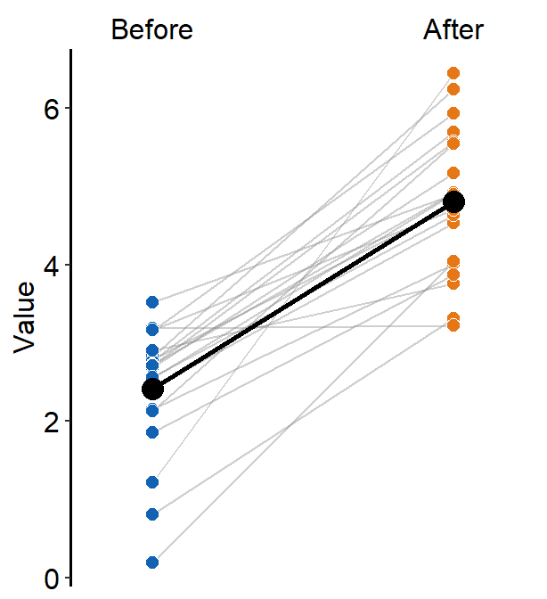
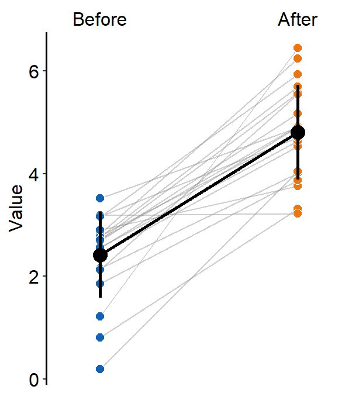
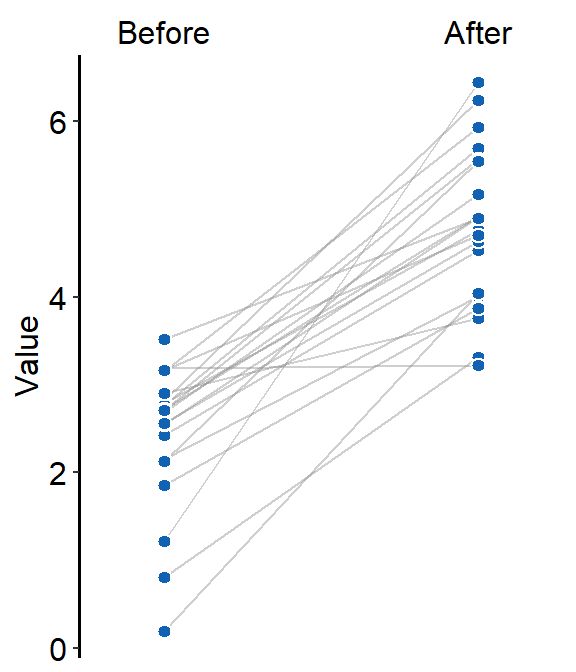
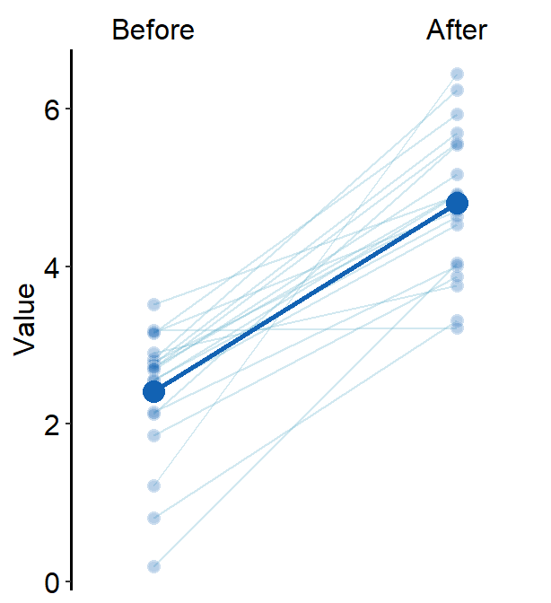
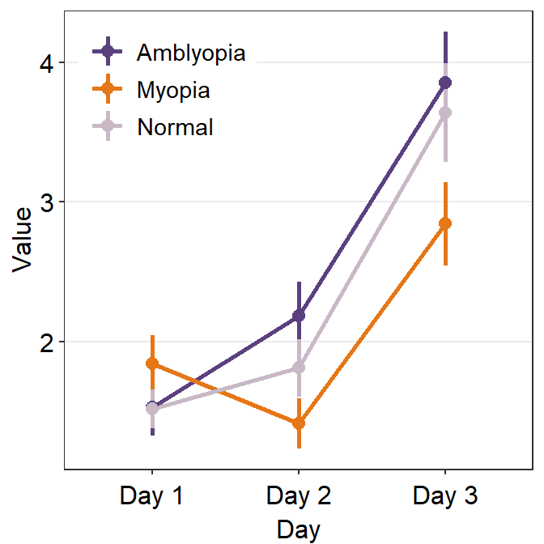
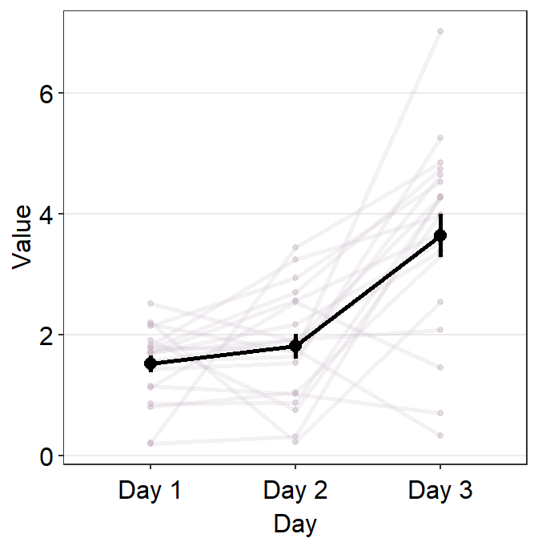
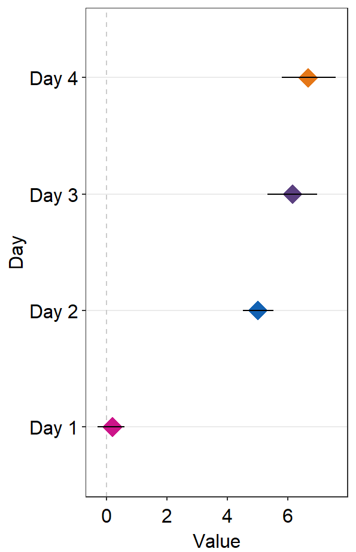

Chapter 12 Slope Charts, Point plots, Bland-Altman, Forests, Rainclouds, Histograms (Part 2)
As in the previous chapter, if you want to find certain bits of information about the package on this page, the best way to do so is to CTRL + F certain key words.
12.1 Slope chart - sm_slope()
A slope chart is popular when changes between two different time points for each measurement (ex. a participant) are described.
We will generate some random data to discuss sm_slope().
library(tidyverse)
library(smplot2)
set.seed(201) # generate random data
before = abs(rnorm(20,2.5,1))
after = abs(rnorm(20,5,1))
Subject <- rep(paste0('S',seq(1:20)), 2)
Data <- data.frame(Value = matrix(c(before,after),ncol=1))
beforeAfter <- rep(c('Before', 'After'), each = length(before))
df <- cbind(Subject, Data, beforeAfter)Each level of x has to be categorical to use sm_slope(). In other words, the x-axis cannot be continuous. It has to be discrete.
- It should take the form of
characterorfactor(ex. ‘One’, ‘Two’, ‘Three’), notdouble. - If x-axis only has number (i.e.,
doubleform, such as 1.02, 1.05, 1.5), thensm_slope()will produce an error.
df$beforeAfter <- factor(df$beforeAfter, levels = c('Before','After'))
df$beforeAfter## [1] Before Before Before Before Before Before Before Before Before Before
## [11] Before Before Before Before Before Before Before Before Before Before
## [21] After After After After After After After After After After
## [31] After After After After After After After After After After
## Levels: Before Aftersm_slope() draws a slope chart.
- It has the argument
legends, which has been set toFALSEas the default. - It automatically uses
sm_slope_theme().
First and foremost, group argument has to be specified within sm_slope().
- ex.
group = Subject, whereSubjectis the name of the column carrying identifers for individuals, means that each individual line will be grouped for each observation.
ggplot(data = df, aes(x = beforeAfter, y = Value, fill = beforeAfter)) +
sm_slope(group = Subject) 
labels argument decides the x-axis tick sm_slope(). If it is empty, it will choose alphabetical letters.
ggplot(data = df, aes(x = beforeAfter, y = Value, fill = beforeAfter)) +
sm_slope(group = Subject,
labels = c('Before', 'After')) +
scale_fill_manual(values= sm_color('blue','orange'))
Same color can also be set across the factors (x-level).
ggplot(data = df, aes(x = beforeAfter, y = Value, fill = beforeAfter)) +
sm_slope(group = Subject,
labels = c('Before', 'After')) +
scale_fill_manual(values= sm_color('blue','blue'))
12.1.1 Drawing the mean plot
When show_mean = TRUE, then the average plot will be shown.
ggplot(data = df, aes(x = beforeAfter, y = Value, fill = beforeAfter)) +
sm_slope(group = Subject,
labels = c('Before', 'After'),
show_mean = TRUE) +
scale_fill_manual(values= sm_color('blue','orange'))
If show_err = TRUE, then the error bar will be displayed.
ggplot(data = df, aes(x = beforeAfter, y = Value, fill = beforeAfter)) +
sm_slope(group = Subject,
labels = c('Before', 'After'),
show_mean = TRUE,
show_err = TRUE) +
scale_fill_manual(values= sm_color('blue','orange'))
sm_slope() has many several arguments:
point.paramsfeeds arguments togeom_point()to plot the individual points with specifiedcolor,fill,size,shapeandalpha.
ggplot(data = df, aes(x = beforeAfter, y = Value)) +
sm_slope(group = Subject,
labels = c('Before', 'After'),
point.params = list(fill = sm_color('blue'),
color = 'white',
size = 2.2,
stroke = 0.65,
shape = 21))line.paramsfeeds arguments togeom_line()to plot the points with specifiedcolor,sizeandalpha.
ggplot(data = df, aes(x = beforeAfter, y = Value)) +
sm_slope(group = Subject,
labels = c('Before', 'After'),
point.params = list(fill = sm_color('blue'),
color = 'white',
size = 2.2,
stroke = 0.65,
shape = 21,
alpha = 0.3),
line.params = list(color = sm_color('skyblue'),
alpha = 0.3))avgPoint.paramsfeeds arguments togeom_point()to plot the average point with specifiedcolor,fill,size,shapeandalpha.
ggplot(data = df, aes(x = beforeAfter, y = Value)) +
sm_slope(group = Subject,
show_mean = TRUE,
labels = c('Before', 'After'),
point.params = list(fill = sm_color('blue'),
color = 'white',
size = 2.2,
stroke = 0.65,
shape = 21,
alpha = 0.3),
line.params = list(color = sm_color('skyblue'),
alpha = 0.3),
avgPoint.params = list(color='transparent', shape = 21,
size = 4, fill = sm_color('blue')))
avgLine.paramsfeeds arguments togeom_line()to plot the average plot (line) with specifiedcolor,sizeandalpha.
ggplot(data = df, aes(x = beforeAfter, y = Value)) +
sm_slope(group = Subject,
show_mean = TRUE,
labels = c('Before', 'After'),
point.params = list(fill = sm_color('blue'),
color = 'white',
size = 2.2,
stroke = 0.65,
shape = 21,
alpha = 0.3),
line.params = list(color = sm_color('skyblue'),
alpha = 0.3),
avgPoint.params = list(color='transparent', shape = 21,
size = 4, fill = sm_color('blue')),
avgLine.params = list(size = 1, color = sm_color('blue')))
err.paramsfeeds arguments togeom_linerange()to plot the error bar with specifiedcolor,sizeetc.
ggplot(data = df, aes(x = beforeAfter, y = Value)) +
sm_slope(group = Subject,
show_mean = TRUE,
show_err = TRUE,
labels = c('Before', 'After'),
point.params = list(fill = sm_color('blue'),
color = 'white',
size = 2.2,
stroke = 0.65,
shape = 21,
alpha = 0.3),
line.params = list(color = sm_color('skyblue'),
alpha = 0.3),
avgPoint.params = list(color='transparent', shape = 21,
size = 4, fill = sm_color('blue')),
avgLine.params = list(size = 1, color = sm_color('blue')),
err.params = list(size = 1, color = sm_color('blue')))
xtick.paramsfeeds arguments toscale_x_discrete()so that the user can have control over specific aesthetics of the x-tick. Type?scale_x_discrete()for more information.errorbar_typecan be used to set the error bar type in the mean plot. The default iserrorbar_type = 'sd'. Two other types areci(95% confidence interval) andse(standard error).
ggplot(data = df, aes(x = beforeAfter, y = Value)) +
sm_slope(group = Subject,
show_mean = TRUE,
show_err = TRUE,
labels = c('Before', 'After'),
point.params = list(fill = sm_color('blue'),
color = 'white',
size = 2.2,
stroke = 0.65,
shape = 21,
alpha = 0.3),
line.params = list(color = sm_color('skyblue'),
alpha = 0.3),
avgPoint.params = list(color='transparent', shape = 21,
size = 4, fill = sm_color('blue')),
avgLine.params = list(size = 1, color = sm_color('blue')),
err.params = list(size = 1, color = sm_color('blue')),
errorbar_type = 'ci')
ggplot(data = df, aes(x = beforeAfter, y = Value)) +
sm_slope(group = Subject,
show_mean = TRUE,
show_err = TRUE,
labels = c('Before', 'After'),
point.params = list(fill = sm_color('blue'),
color = 'white',
size = 2.2,
stroke = 0.65,
shape = 21,
alpha = 0.3),
line.params = list(color = sm_color('skyblue'),
alpha = 0.3),
avgPoint.params = list(color='transparent', shape = 21,
size = 4, fill = sm_color('blue')),
avgLine.params = list(size = 1, color = sm_color('blue')),
err.params = list(size = 1, color = sm_color('blue')),
errorbar_type = 'se')
many_groupsdecides whether the average plot is based on all individual data across groups or per group.
To show how this function works, we will need to use data with multiple groups and timepoints.
set.seed(201) # generate random data
day1 = abs(rnorm(20,2.5,1))
day2 = abs(rnorm(20,5,1))
day3 = abs(rnorm(20,7.5,1))
Subject <- rep(paste0('N',seq(1:20)), 3)
Data <- data.frame(Value = matrix(c(day1,day2,day3),ncol=1))
Day <- rep(c('Day 1', 'Day 2', 'Day 3'), each = length(day1))
df <- cbind(Subject, Data, Day)
df$group <- 'Normal'
set.seed(191) # generate random data
day1 = abs(rnorm(20,1.5,1))
day2 = abs(rnorm(20,1.8,1))
day3 = abs(rnorm(20,2.3,1))
Subject <- rep(paste0('P',seq(1:20)), 3)
Data <- data.frame(Value = matrix(c(day1,day2,day3),ncol=1))
Day <- rep(c('Day 1', 'Day 2', 'Day 3'), each = length(day1))
df2 <- cbind(Subject, Data, Day)
df2$group <- 'Patients'
df3 <- rbind(df,df2)If we plot a slope chart, sm_slope(..., show_mean = TRUE) using data of multiple groups while many_groups = FALSE, we will draw a single average plot across all groups.
ggplot(data = df3, aes(x = Day, y = Value, color = group,
shape = group, group = group)) +
sm_slope(labels = c('Day 1','Day 2', 'Day 3'),
group = Subject,
point.params = list(alpha = 0.2),
line.params = list(alpha = 0.2),
avgPoint.params = list(size = 4),
avgLine.params = list(size = 1),
err.params = list(size = 1),
legends = TRUE,
show_mean = TRUE) +
scale_color_manual(values = sm_color('viridian','darkred')) +
scale_shape_manual(values = c(16,17)) +
theme(legend.position = c(0.2,0.85),
legend.title = element_blank(),
legend.text = element_text(size = 10))
To prevent this from happening, set many_groups = TRUE.
ggplot(data = df3, aes(x = Day, y = Value, color = group,
shape = group, group = group)) +
sm_slope(labels = c('Day 1','Day 2', 'Day 3'),
group = Subject,
point.params = list(alpha = 0.2),
line.params = list(alpha = 0.2),
avgPoint.params = list(size = 4),
avgLine.params = list(size = 1),
err.params = list(size = 1),
many_groups = TRUE,
legends = TRUE,
show_mean = TRUE) +
scale_color_manual(values = sm_color('viridian','darkred')) +
scale_shape_manual(values = c(16,17)) +
theme(legend.position = c(0.2,0.85),
legend.title = element_blank(),
legend.text = element_text(size = 10))12.2 Point plot - sm_pointplot()
A point plot is typically an average plot with error bars. sm_pointplot() is useful if the data has many groups or if the user wants to include a shadow of individual points behind the (average) point plot. The function accepts legends and borders like other smplot2 functions.
Let’s generate some random data. .
set.seed(201) # generate random data
day1 = abs(rnorm(20,1.5,1))
day2 = abs(rnorm(20,2,1))
day3 = abs(rnorm(20,4.1,2.2))
Subject <- rep(paste0('N',seq(1:20)), 3)
Data <- data.frame(Value = matrix(c(day1,day2,day3),ncol=1))
Day <- rep(c('Day 1', 'Day 2', 'Day 3'), each = length(day1))
df <- cbind(Subject, Data, Day)
df$group <- 'Normal'
set.seed(191) # generate random data
day1 = abs(rnorm(20,1.5,1))
day2 = abs(rnorm(20,1.8,1))
day3 = abs(rnorm(20,2.3,1.5))
Subject <- rep(paste0('M',seq(1:20)), 3)
Data <- data.frame(Value = matrix(c(day1,day2,day3),ncol=1))
Day <- rep(c('Day 1', 'Day 2', 'Day 3'), each = length(day1))
df2 <- cbind(Subject, Data, Day)
df2$group <- 'Myopia'
set.seed(1291) # generate random data
day1 = abs(rnorm(20,1.5,1))
day2 = abs(rnorm(20,2.2,1))
day3 = abs(rnorm(20,3.3,1.8))
Subject <- rep(paste0('A',seq(1:20)), 3)
Data <- data.frame(Value = matrix(c(day1,day2,day3),ncol=1))
Day <- rep(c('Day 1', 'Day 2', 'Day 3'), each = length(day1))
df3 <- cbind(Subject, Data, Day)
df3$group <- 'Amblyopia'
df1 <- rbind(df,df2,df3) # three groups of individuals, three time pointssm_pointplot() groups each observation to plot the line. So, the grouping always needs to be specified: ggplot(aes(x = ..., y = ..., group = xxx)).
ggplot(data = df1, aes(x = Day, y = Value,
color = group, group = group)) +
sm_pointplot()
We can customise the colors using sm_color_manual().
set.seed(11)
my_colors <- sample(sm_palette(20),3) # pick random 3 colors
ggplot(data = df1, aes(x = Day, y = Value,
color = group, group = group)) +
sm_pointplot(legends = T) +
scale_color_manual(values = my_colors) +
theme(legend.position = c(0.22,0.83), # add legend
legend.title = element_blank())The problem with this plot is that we do not clearly see the error bars, especially the ones of the Amblyopia plot.
To resolve this, we will need to explore the parameters of sm_pointplot().
...is the generic parameter that controls all aspects of the plot.- This will be important to apply
position_dodge()to prevent the overlap of the plots.
- This will be important to apply
ggplot(data = df1, aes(x = Day, y = Value,
color = group, group = group)) +
sm_pointplot(legends = T,
position = position_dodge(width = .05)) +
scale_color_manual(values = my_colors) +
theme(legend.position = c(0.22,0.83), # add legend
legend.title = element_blank())
avgPoint.paramsfeeds arguments togeom_point()to plot the average point with specifiedcolor,fill,size,shapeandalpha.
Remember that in this case, all three plots show the average, not the individual data.
ggplot(data = df1, aes(x = Day, y = Value,
color = group, group = group)) +
sm_pointplot(legends = T,
position = position_dodge(width = .05),
avgPoint.params = list(alpha = 0.8, size = 2.2,
shape = 15)) +
scale_color_manual(values = my_colors) +
theme(legend.position = c(0.22,0.83), # add legend
legend.title = element_blank())
avgLine.paramsfeeds arguments togeom_line()to plot the average line with specifiedcolor,sizeandalpha.
ggplot(data = df1, aes(x = Day, y = Value,
color = group, group = group)) +
sm_pointplot(legends = T,
position = position_dodge(width = .05),
avgPoint.params = list(alpha = 0.8, size = 2.2,
shape = 15),
avgLine.params = list(alpha = 0.8, size = 1)) +
scale_color_manual(values = my_colors) +
theme(legend.position = c(0.22,0.83), # add legend
legend.title = element_blank())
point.paramsfeeds arguments togeom_point()to plot the points in the shadow with specifiedcolor,fill,size,shapeandalpha.line.paramsfeeds arguments togeom_line()to plot the lines in the shadow with specifiedcolor,sizeandalpha.
To show these parameters, we will need to plot data only from one group.
Let’s display the shadow by setting show_shadow = TRUE. To show the shadow, group argument has to be included, which represents the variable by which each individual observation is grouped across the x-axis. In this case, it would be group = Subject.
ggplot(data = df, aes(x = Day, y = Value, group = group)) +
sm_pointplot(show_shadow = T,
group = Subject)
By using point.params and line.params, you can control the aesthetics of the shadow.
ggplot(data = df, aes(x = Day, y = Value, group = group)) +
sm_pointplot(show_shadow = T,
group = Subject,
point.params = list(size = 1,
color = sm_color('wine'),
alpha = 0.5),
line.params = list(size = 1,
color = sm_color('wine'),
alpha = 0.2))Now let’s control the aesthetics of the average plot using avgPoint.params, avgLine.params and err.params.
ggplot(data = df, aes(x = Day, y = Value, group = group)) +
sm_pointplot(show_shadow = T,
group = Subject,
point.params = list(size = 1,
color = sm_color('wine'),
alpha = 0.5),
line.params = list(size = 1,
color = sm_color('wine'),
alpha = 0.2),
avgPoint.params = list(size = 3,
shape = 21,
color = 'white',
stroke = 0.8,
fill = sm_color('purple')),
avgLine.params = list(size = 1.2,
alpha = 0.7,
color = sm_color('purple')),
err.params = list(size = 1.2,
alpha = 0.7,
color = sm_color('purple')))errorbar_typecan control the type of the error that is shown on the point plot. The three choices are standard error (se), standard deviation (sd) and 95% confidence interval (ci).
ggplot(data = df, aes(x = Day, y = Value, group = group)) +
sm_pointplot(show_shadow = T,
group = Subject,
errorbar_type = 'sd',
point.params = list(size = 1,
color = sm_color('wine'),
alpha = 0.5),
line.params = list(size = 1,
color = sm_color('wine'),
alpha = 0.2),
avgPoint.params = list(size = 3,
shape = 21,
color = 'white',
stroke = 0.8,
fill = sm_color('purple')),
avgLine.params = list(size = 1.2,
alpha = 0.7,
color = sm_color('purple')),
err.params = list(size = 1.2,
alpha = 0.7,
color = sm_color('purple')))
12.3 A Bland Altman plot - sm_bland_altman()
sm_bland_altman() and sm_statBlandAlt() functions can be used to create a Bland-Altman plot.
- The plot is used to measure agreement between two different measurements.
- It is also used to measure test-retest variability of a method.
Let’s generate some random data to explore these two functions.
set.seed(1)
first <- rnorm(20)
second <- rnorm(20)
df3 <- as_tibble(cbind(first,second)) # requires library(tidyverse)Now let’s draw a Bland Altman plot using sm_bland_altman(), which requires two arguments: first dataset, second dataset. They have to be numerical vectors of equal length.
- This function automatically uses sm_classic() theme.
sm_bland_altman(df3$first, df3$second, color = sm_color('green')) +
scale_y_continuous(limits = c(-4,4))
The upper dashed line represents the upper limit of the difference between two measurements (mean difference + 1.96 * standard deviation of the difference).
The lower dashed line represents the lower limit of the difference between two measurements (mean difference - 1.96 * standard deviation of the difference).
The middle dashed line represents the mean difference.
The shaded region is the 95% confidence interval of the difference between the two measurements from one-sample t-test (difference vs 0).
- If the shaded region includes 0 in the y-axis, then there is no significant difference (p > 0.05) between 0 and the difference.
- If it does not include 0, then there is a significant difference. This indicates that the two measurement results are considerably different.
I usually label them with
annotate(), which is a function from ggplot2. This process can be tedious.Also,
sm_statBlandAlt()calculates the statistical values that are necessary to draw a Bland-Altman plot, such as the mean difference, upper and lower limits. This function is used to annotate the values in the plot.- The arguments for this function are first and second datasets, just like in
sm_bland_altman().
- The arguments for this function are first and second datasets, just like in
res <- sm_statBlandAlt(df3$first,df3$second) # store the results in res variable
sm_bland_altman(df3$first, df3$second, color = sm_color('green')) +
scale_y_continuous(limits = c(-4,4)) +
annotate('text', label = 'Mean', x = -1, y = res$mean_diff + 0.4) +
annotate('text', label = signif(res$mean_diff,3), x = -1, y = res$mean_diff - 0.4) +
annotate('text', label = 'Upper limit', x = 1.2, y = res$upper_limit + 0.4) +
annotate('text', label = signif(res$upper_limit,3), x = 1.2, y = res$upper_limit - 0.4) +
annotate('text', label = 'Lower limit', x = 1.2, y = res$lower_limit + 0.4) +
annotate('text', label = signif(res$lower_limit,3), x = 1.2, y = res$lower_limit-0.4)- Let’s change the border color of the circles to white. To do so, we will have to change their shape to 21.
sm_bland_altman(df3$first, df3$second, shape = 21, fill = sm_color('green'), color = 'white') +
scale_y_continuous(limits = c(-4,4)) +
annotate('text', label = 'Mean', x = -1, y = res$mean_diff + 0.4) +
annotate('text', label = signif(res$mean_diff,3), x = -1, y = res$mean_diff - 0.4) +
annotate('text', label = 'Upper limit', x = 1.2, y = res$upper_limit + 0.4) +
annotate('text', label = signif(res$upper_limit,3), x = 1.2, y = res$upper_limit - 0.4) +
annotate('text', label = 'Lower limit', x = 1.2, y = res$lower_limit + 0.4) +
annotate('text', label = signif(res$lower_limit,3), x = 1.2, y = res$lower_limit-0.4)
12.4 Forest plot - sm_forest()
A forest plot can summarise data across multiple studies or experiments.
set.seed(2) # generate random data
day1 = rnorm(20,0,1)
day2 = rnorm(20,5,1)
day3 = rnorm(20,6,1.5)
day4 = rnorm(20,7,2)
Subject <- rep(paste0('S',seq(1:20)), 4)
Data <- data.frame(Value = matrix(c(day1,day2,day3,day4),ncol=1))
Day <- rep(c('Day 1', 'Day 2', 'Day 3', 'Day 4'), each = length(day1))
df2 <- cbind(Subject, Data, Day)When using sm_forest(), x is required to be a continuous variable. y should be a categorical variable (i.e., factor).
ggplot(data = df2, aes(x = Value, y = Day, color = Day)) +
sm_forest() 
sm_forest() has many parameters.
point_jitter_widthcontrols the width of the jitter in individual points.sep_levelcontrols the separation level between the average point and the individual points.- The difference between
sm_raincloudandsm_forest()is thatsep_levelinsm_forest()does not have a limit to its range compared to 0-4 insm_raincloud().
- The difference between
ggplot(data = df2, aes(x = Value, y = Day, color = Day)) +
sm_forest(point_jitter_width = 0.2, sep_level = 3) +
scale_color_manual(values = sm_palette(4))
sep_level can also be negative. The position of the points relative to the average points will be opposite (individual points above average points).
ggplot(data = df2, aes(x = Value, y = Day, color = Day)) +
sm_forest(point_jitter_width = 0.2, sep_level = -3) +
scale_color_manual(values = sm_palette(4))
errorbar_typecontrols the type of the error bar.- The default error bar type is 95% confidence interval (
errorbar_type = 'ci'). You can change it to either standard error ('se') or standard deviation ('sd'). Here is standard deviation.
- The default error bar type is 95% confidence interval (
ggplot(data = df2, aes(x = Value, y = Day, color = Day)) +
sm_forest(point_jitter_width = 0.2, sep_level = 3,
errorbar_type = 'sd') +
scale_color_manual(values = sm_palette(4))
- If
points = FALSE, the points will not be shown.
ggplot(data = df2, aes(x = Value, y = Day, color = Day)) +
sm_forest(point_jitter_width = 0.2, sep_level = 3,
points = FALSE) +
scale_color_manual(values = sm_palette(4))
- If
refLine = TRUE, the reference line will be shown. Its location along the x-axis can be controlled byxintercept(default:xintercept = 0).
ggplot(data = df2, aes(x = Value, y = Day, color = Day)) +
sm_forest(point_jitter_width = 0.2, sep_level = 3,
refLine = TRUE, xintercept = 4) +
scale_color_manual(values = sm_palette(4))
sm_forest() has xxx.params arguments as well as ... generic parameter:
avgPoint.paramsfeeds arguments togeom_point()to plot the average point with specifiedcolor,fill,size,shapeandalpha.
ggplot(data = df2, aes(x = Value, y = Day, color = Day)) +
sm_forest(avgPoint.params = list(shape = 17,
size = 4)) +
scale_color_manual(values = sm_palette(4))
err.params = list()feeds arguments, such ascolorandsize, togeom_linerange()to plot the error bar.
ggplot(data = df2, aes(x = Value, y = Day, color = Day)) +
sm_forest(avgPoint.params = list(shape = 17,
size = 4),
err.params = list(size = 1)) +
scale_color_manual(values = sm_palette(4))
Notice that the default color of err.params = list(color = 'black') has disappeared. You could manually include it to restore the default.
ggplot(data = df2, aes(x = Value, y = Day, color = Day)) +
sm_forest(avgPoint.params = list(shape = 17,
size = 4),
err.params = list(size = 1,
color = 'black')) +
scale_color_manual(values = sm_palette(4))point.params = list()feeds arguments, such ascolor,fill, andalphatogeom_point()to plot the individual points.
ggplot(data = df2, aes(x = Value, y = Day, color = Day)) +
sm_forest(avgPoint.params = list(shape = 17,
size = 4),
err.params = list(size = 1,
color = 'black'),
point.params = list(shape = 17,
alpha = 0.5,
size = 2.2)) +
scale_color_manual(values = sm_palette(4))
refLine.params = list()feeds arguments, such ascolorandsizetogeom_vline()to plot the reference line.
ggplot(data = df2, aes(x = Value, y = Day, color = Day)) +
sm_forest(refLine = TRUE,
avgPoint.params = list(shape = 17,
size = 4),
err.params = list(size = 1,
color = 'black'),
point.params = list(shape = 17,
alpha = 0.5,
size = 2.2),
ref.params = list(color = 'black',
linetype = 'dashed')) +
scale_color_manual(values = sm_palette(4))12.4.1 Annotation using sm_forest_annot()
Annotations about the error range (ex. 95% confidence interval) in texts can be done using sm_forest_annot().
sm_forest_annot() has various arguments:
The
datarefers to the name of the data frame that is used inggplot().xargument is the x variable that is used inggplot().yargument is the variable that is used inggplot().
ggplot(data = df2, aes(x = Value, y = Day, color = Day)) +
sm_forest() +
scale_color_manual(values = sm_palette(4)) +
sm_forest_annot(data = df2, x = Value, y = Day)sep_levelrefers to the separation level between the text annotation and the average point. If it is positive, the text will be above the mean point. In practice, put the same value ofsep_levelin bothsm_forest()andsm_forest_annot(). The default issep_level = 2, which is also found insm_forest().
sep_distance <- 3
ggplot(data = df2, aes(x = Value, y = Day, color = Day)) +
sm_forest(sep_level = sep_distance) +
scale_color_manual(values = sm_palette(4)) +
sm_forest_annot(data = df2, x = Value, y = Day,
sep_level = sep_distance)errorbar_typerefers to the type of error by which the text annotation should be written. In practice, put the same argument ofsep_levelin bothsm_forest()andsm_forest_annot(). The default is set to confidence interval (errorbar_type = 'ci').
sep_distance <- 3
errType <- 'sd'
ggplot(data = df2, aes(x = Value, y = Day, color = Day)) +
sm_forest(sep_level = sep_distance,
errorbar_type = errType) +
scale_color_manual(values = sm_palette(4)) +
sm_forest_annot(data = df2, x = Value, y = Day,
sep_level = sep_distance,
errorbar_type = errType)
text.paramsfeeds arguments togeom_text()to set the aesthetics of the texts such ascolorandsize.
sep_distance <- 2
errType <- 'sd'
ggplot(data = df2, aes(x = Value, y = Day, color = Day)) +
sm_forest(sep_level = sep_distance,
errorbar_type = errType) +
scale_color_manual(values = sm_palette(4)) +
sm_forest_annot(data = df2, x = Value, y = Day,
sep_level = sep_distance,
errorbar_type = errType,
text.params = list(size = 3.5))
Notice that text.params = list(color = 'black') has been removed because we have specifically wirtten text.params = list(). Therefore, there is now unique color to each Day as set within ggplot(...,aes(color = Day)).
sep_level that is negative will shift the positions of the annotations and points.
sep_distance <- -2
errType <- 'sd'
ggplot(data = df2, aes(x = Value, y = Day, color = Day)) +
sm_forest(sep_level = sep_distance,
errorbar_type = errType) +
scale_color_manual(values = sm_palette(4)) +
sm_forest_annot(data = df2, x = Value, y = Day,
sep_level = sep_distance,
errorbar_type = errType,
text.params = list(size = 3.5))
12.5 Raincloud plot - sm_raincloud()
To generate a raincloud plot, sm_raincloud() can be used.
- It also has arguments
bordersandlegendsas it usessm_hgrid()automatically.
In this section, we will use this random data.
set.seed(2343) # generate random data
group1 = abs(rnorm(20,2.5,1))
group2 = abs(rnorm(20,5,1))
Subject <- rep(paste0('S',seq(1:20)), 2)
Data <- data.frame(Value = matrix(c(group1,group2),ncol=1))
Group <- rep(c('Group 1', 'Group 2'), each = length(group1))
df <- cbind(Subject, Data, Group)ggplot(data = df, mapping = aes(x = Group, y = Value, fill = Group)) +
sm_raincloud() 
fill can be customised using scale_fill_manual().
ggplot(data = df, mapping = aes(x = Group, y = Value, fill = Group)) +
sm_raincloud() +
scale_fill_manual(values = sm_color('blue','orange'))
Here, x has to be a categorical variable. y should be a continuous variable.
sm_raincloud() has various parameters.
point_jitter_widthcontrols the width of the jitter of individual points.sep_level(0-4) controls the separation level among the boxplot, violin plot and the points. The default is set tosep_level = 2.sep_level = 0overlaps them.sep_level = 4separates them.
ggplot(data = df, mapping = aes(x = Group, y = Value, fill = Group)) +
sm_raincloud(sep_level = 4,
point_jitter_width = .2) +
scale_fill_manual(values = sm_color('blue','orange'))which_siderefers to the side where the distribution plot faces.rorrightwill face the distribution to the right (default).lorleftwill face the distribution to the left.
ggplot(data = df, mapping = aes(x = Group, y = Value, fill = Group)) +
sm_raincloud(which_side = 'left') +
scale_fill_manual(values = sm_color('blue','orange'))verticalcontrols the orientation of the raincloud plot. The default is set tovertical = TRUE. It refers to the fact that the distribution is vertically oriented.
ggplot(data = df, mapping = aes(x = Group, y = Value, fill = Group)) +
sm_raincloud(vertical = FALSE) +
scale_fill_manual(values = sm_color('blue','orange'))vertical = FALSE and which_side = 'right' gives the true raincloud shape, the distribution plot being the cloud and the individual points being the rain.
pointsis an argument that determines whether the jittered individual points are shown on the plot.- The default is set to
points = TRUE.
- The default is set to
ggplot(data = df, mapping = aes(x = Group, y = Value, fill = Group)) +
sm_raincloud(points = FALSE) +
scale_fill_manual(values = sm_color('blue','orange'))
Lastly, it has xxx.params to control the aesthetics of boxplots, violins and the points:
boxplot.paramssends arguments togeom_half_boxplot()(almost identical togeom_boxplot()) to plot the boxplot with specifiedcolor,fill,outlier.shapeetc.
ggplot(data = df, mapping = aes(x = Group, y = Value, fill = Group)) +
sm_raincloud(boxplot.params = list(color = 'white')) +
scale_fill_manual(values = sm_color('blue','orange'))By setting the color (border of the boxplot) as white, I think the raincloud plot looks more elegant and minimalistic.
violin.paramssends arguments togeom_half_violin()(almost identical togeom_violin()) to plot the violin plot with specifiedcolor,alphaandfill, etc
ggplot(data = df, mapping = aes(x = Group, y = Value, fill = Group)) +
sm_raincloud(boxplot.params = list(color = 'white'),
violin.params = list(alpha = 0.2,
color = 'transparent')) +
scale_fill_manual(values = sm_color('blue','orange'))
point.paramssends arguments togeom_point()to plot the points in the shadow with specifiedcolor,fill,size,shapeandalpha.
ggplot(data = df, mapping = aes(x = Group, y = Value, fill = Group)) +
sm_raincloud(boxplot.params = list(color = 'white'),
violin.params = list(alpha = 0.2,
color = 'transparent'),
point.params = list(stroke = 0.8,
shape = 21,
color = 'white',
size = 2.6)) +
scale_fill_manual(values = sm_color('blue','orange'))
You can also change the label of the x-axis tick using scale_x_discrete() rather than scale_x_continuous() from the original smplot.
ggplot(data = df, mapping = aes(x = Group, y = Value, fill = Group)) +
sm_raincloud(boxplot.params = list(color = 'white'),
violin.params = list(alpha = 0.2,
color = 'transparent'),
point.params = list(stroke = 0.8,
shape = 21,
color = 'white',
size = 2.6)) +
scale_fill_manual(values = sm_color('blue','orange')) +
scale_x_discrete(labels = c('One', 'Two'))12.6 Histogram - sm_hist()
Histogram is used to show the distribution of data.
Using this random data, I will demonstrate sm_hist().
set.seed(2)
data=data.frame(value=rnorm(1000))
data2 = data.frame(value=rnorm(1000,5,1))
data$day <- 'day1'
data2$day <- 'day2'
rbind(data,data2) -> dfLet’s generate histogram just for data.
ggplot(data = data, aes(x=value, fill=day)) +
sm_hist() 
sm_hist() has many arguments.
histogramcan be used to show or not show the histogram.- The default is set to
histogram = TRUE.
- The default is set to
ggplot(data = data, aes(x=value, fill=day)) +
sm_hist(histogram = FALSE) 
densitycan be used to show or not show the density estimation plot.- The default is set to
density = TRUE.
- The default is set to
ggplot(data = data, aes(x=value, fill=day)) +
sm_hist(density = FALSE) 
rugcan be used to show or not show the rugs below the histogram.- The default is
rug = TRUE.
- The default is
ggplot(data = data, aes(x=value, fill=day)) +
sm_hist(rug = FALSE) 
borderscan summon the borders when set toborders = TRUE.- The default is
borders = FALSE.
ggplot(data = data, aes(x=value, fill=day)) +
sm_hist(borders = TRUE) 
hist.paramsfeeds arguments togeom_histogram()that dictates the aesthetics of the histogram, such ascolor,fill,alphaandbinwidth.binwidthrefers to the width of the bins. It has to be included if the user wishes to writehist.params = list()to finely control the aesthetics of the histogram.
ggplot(data = data, aes(x=value, fill=day)) +
sm_hist(hist.params = list(color = 'black',
fill = sm_color('skyblue'),
alpha = 0.7,
binwidth = 1/4)) 
density.paramsfeeds arguments togeom_density()that dictates the aesthetics of the histogram, such ascolor,fillandalpha.
ggplot(data = data, aes(x=value, fill=day)) +
sm_hist(hist.params = list(color = 'black',
fill = sm_color('skyblue'),
alpha = 0.5,
binwidth = 1/4),
density.params = list(color = 'black',
size = 1,
linetype = 'dashed',
fill = 'transparent')) 
rug.paramsfeeds arguments togeom_rugto control the aesthetics of the rugs such ascolor,alphaandsize.
ggplot(data = data, aes(x=value, fill=day)) +
sm_hist(hist.params = list(color = 'black',
fill = sm_color('skyblue'),
alpha = 0.5,
binwidth = 1/4),
density.params = list(color = 'black',
size = 1,
linetype = 'dashed',
fill = 'transparent'),
rug.params = list(color = sm_color('skyblue'),
size = 0.5)) 
You can also plot the histogram across multiple conditions/groups by setting ggplot(aes(..., color = xx). We can demonstrate this using df, which has data across multiple groups.
legendsargument can be used to show the legend iflegends = TRUE.- The default is set to
legends = FALSE.
- The default is set to
df %>% ggplot(aes(x=value, fill=day, color = day)) +
sm_hist(hist.params = list(binwidth = 1/4, alpha = 0.3),
density.params = list(fill='transparent', size = 0.8),
rug.params = list(alpha = 0.8), legends = TRUE) +
scale_color_manual(values = sm_color('blue', 'orange')) +
scale_fill_manual(values = sm_color('blue', 'orange')) +
ggtitle('Histograms + rugs + kernel estimations of two groups') +
theme(plot.title= element_text(size = rel(0.85))) +
theme(legend.position = c(0.84,0.82),
legend.title = element_blank(),
legend.text = element_text(size = 11))